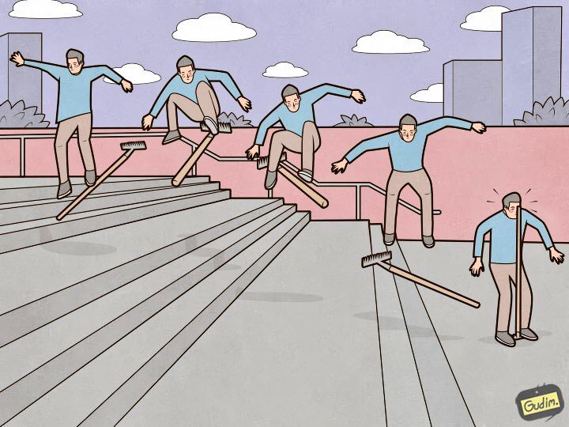
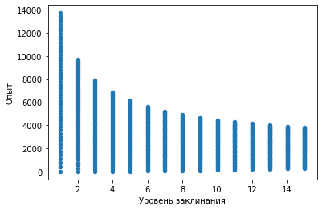
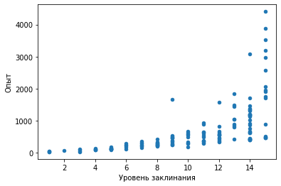
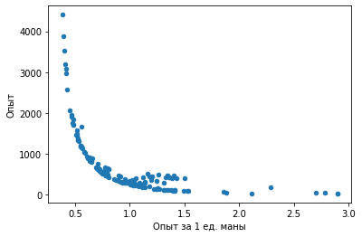

Приветствую читателей. В данной статье затронем такой насущный, для магов, вопрос, как “Какие заклинания и в каком порядке необходимо использовать, чтобы получать максимальное количество опыта за бой?”. Заодно развеем несколько мифов, связанных с этим.
Начнем с описания формулы расчета опыта за заклинания, которую публиковал Rewad на форуме:
опыт за заклинание = округление(((уровень_навыка_магии_требуемый_для_изучения_заклинания)^2.1+(расход_маны^0.9)*3.5/(уровень_навыка_магии_требуемый_для_изучения_заклинания)^0.5)*(1-0.03*количество_произнесенных_заклинаний))
…
Но это, так сказать, сферические формулы в вакууме, накопленный таким образом опыт за весь бой при подсчете результатов еще обрабатывается, к нему применяются разные коэффициенты – от интеллекта, от разности уровней с ботами, от штрафа за уровень аватара, от профессии и т.п.
Rewad
Сразу же отсеиваем миф о том, что заклинания нужно чередовать для увеличения опыта – это не играет никакой роли в итоговом расчете.
Таким образом, видим, что опыт за заклинания зависит от:
- Уровня магии заклинания (от 1 до 15)
- Расхода маны на заклинание
- Порядка произнесения заклинания
- Интеллекта игрока
- Разности уровней соперников и игрока
- Штрафов за уровень персонажа, профессию и т.д.
- Активации двойного опыта печати, хороших выходных, двойного опыт из кошелька
С пунктами с 4 по 7 все более-менее ясно, они оказывают прямое влияние на итоговый опыт. Рассмотрим подробно функцию расчета опыта от самих заклинаний. Для этого сгенерируем несуществующие заклинания от 1 до 15 уровня магии с затратами маны от 200 до 10 000 с шагом 200.

На графике видно, что чем выше уровень заклинания, тем меньше опыта за него можно получить. Заклинание 1-го уровня стоимостью 10 000 маны даст почти 14 000 опыта, в то время как аналогичное заклинание 15-го уровня даст 4 000 опыта. Получается сливаться нужно мелкими заклинаниями 1-го уровня?
Не совсем. Заклинаний 1-го уровня со стоимостью в 10 000 маны не существует.
Стоит рассмотреть реальные игровые примеры. Возьмем все заклинания в игре и построим подобный график для них.

Совсем другая картина. Чем старше уровень магии заклинания, тем больше опыта. Но почему в предыдущем примере все было иначе?
Чтобы ответить на этот вопрос построим график зависимости опыта за 1 единицу маны и общего опыта за заклинание
Если внимательно посмотреть на график, можно заметить, что самые дорогие по опыту заклинания имеют наименьшую эффективность опыт/мана (0.5 опыта за 1 единицу маны). А заклинания наименьшей стоимости по мане имеют наибольший коэффициент (вплоть до 3 опыта за 1 единицу маны).

Что можно сказать уже сейчас? Чем старше по навыку магии заклинание, тем меньше эффективность “конвертации” маны в опыт, но так как эти заклинания стоят много маны, они дают наибольший прирост опыта. В целом, это очевидно, что 1 каст Ангела-хранителя за 10к+ маны даст больше опыта, чем 1 каст Ускорения времени. Но фактически ускорение времени более эффективно, чем Ангел-хранитель.
На данном этапе важным элементом расчета является то, что чем больше заклинаний произнесет маг, тем меньше опыта даст каждое следующее заклинание. Предельное количество заклинаний, за которое будет начисляться опыт – 33 штуки. Как это поможет в расчетах лучшей комбинации слива маны? В некотором идеальном мире у игрока должно быть ~350 000 маны, чтобы скастовать 33 раза Ангел-хранитель (или любое другое самое дорогое по опыту заклинание). Другого лучшего варианта быть не может. Другое дело, что не у всех игроков есть столько маны.
Однако логика расчетов будет сохраняться – самая эффективная конвертация маны в опыт находится в точке, при которой игрок кастует 33 раза заклинание с наивысшим опытом за 1ед. маны среди всех доступных заклинаний, расходуя при этом всю ману. Соответственно для каждого класса и пула магии это заклинание отличается.
Посчитаем наиболее выгодные заклинания для нескольких вариантов количества маны у игрока. Результаты представлены в таблице ниже.
Выводы
В целом, данных из таблице выше вполне достаточно, чтобы прикинуть список заклинаний для максимальной эффективности перевода маны в опыт. Подведем итоги:
- Для получения наибольшего количества опыта необходимо слить всю ману на заклинание, произведение опыта и количество кастов которого больше, чем у всех остальных доступных заклинаний. Пример из таблицы: у игрока 10 000 маны, он может скастовать 1 трупоеда (3 886 опыта) или 20 удушений (6 521 опыта), или 12 оков боли (6 343 опыта). Удушение даст больше опыта, так как произведение количества опыта за 1 заклинание и количества кастов больше, чем у других рассматриваемых заклинаний (с учетом потери 3% опыта за каждый каст). Таблицу выше можно скачать и самостоятельно определить наиболее выгодное заклинание для прокачки под конкретное значение маны.
- Воздействие на стоимость заклинания в мане приводит к изменению получаемого опыта за каст заклинания. Таким образом, если на игроке висит дебаф на +N% стоимости заклинаний (опустошение разума, экипированы кловеры и т.д.), опыт за каждое заклинание будет выше. И обратный эффект, сниженная стоимость заклинаний приводит к уменьшению получаемого за них опыта.
- Миф о том, что необходимо чередовать заклинания для получения большего количества опыта остается мифом – разнообразие заклинаний в общем списке кастов не играет никакой роли. Сливаться можно и одним заклинанием.
- Чем старше уровень заклинания (уровень магии для изучения), тем меньше эффективность конвертации маны в опыт, но так как растет стоимость произнесения заклинания в мане, заклинания старших уровней дают больше всего опыта за 1 каст.
- Максимальное количество заклинаний, за которое можно получить опыт в бою – 33. Все следующие заклинания будут давать 0 опыта.
- Исходя из предыдущего пункта делаем вывод о том, что выгоднее кастовать в начале боя самые дорогие по опыту заклинания (из пункта 1) и заканчивать самыми дешевыми из доступных. То есть 10 трупоедов и 10 статических разрядов дадут сильно больше опыта, чем 10 статических разрядов и 10 трупоедов.
Возможно скоро на Аватариуме появится соответствующий раздел, в котором можно определить наилучшую комбинацию для слива маны.